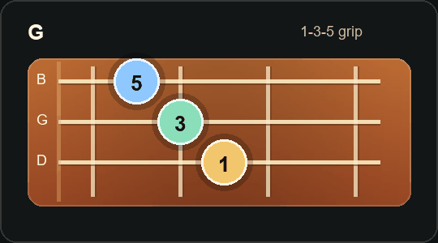

Find nearby chord shapes faster.
See where the root, 3rd, and 5th live so your hand has a clear target.
FretFlow Trainer
FretFlow is a guitar practice tool for progressions, chord tones, bass walks, Nashville numbers, and smoother movement across the fretboard.
Use the custom progressions, any string set, chord walks, chord tones, scales, lab tools, and progress tracker while we keep improving FretFlow.
Open Free Trainer Free access runs through Labor Day, September 7, 2026.See where the root, 3rd, and 5th live so your hand has a clear target.
Use chord names or Nashville numbers, then practice the movement in different positions.
Practice moves like G to Em, C to F, or F to G with steady timing.
How to use it
The home page explains the tool. The trainer page keeps the actual work separate and focused.
Go straight to the practice workspace when your guitar is in your hands.
Try G Em C D, 1 6m 4 5, or the chords from a song.
Practice open, low, middle, or high positions across the fretboard.
Let the chord ring on the beat, then use the bass note to land on the next chord.
Preview
The trainer is built to help you stop staring at chord sheets and start seeing how the music moves.

Full FretFlow access is free through Labor Day while we keep improving the trainer with real player feedback.
Questions or ideas
Send ideas for chord walk features, progression practice, or anything that would make the trainer easier to use.
Send trainer questions, feature ideas, and practice-tool feedback to the FretFlow inbox.
Email FretFlow fretflowtrainer@outlook.comThe practice tool now lives on a separate page: Open Trainer.
Yes. Use open, low, middle, and high positions on the trainer page.
Yes. Put in a progression and choose which chord changes get a bass walk.